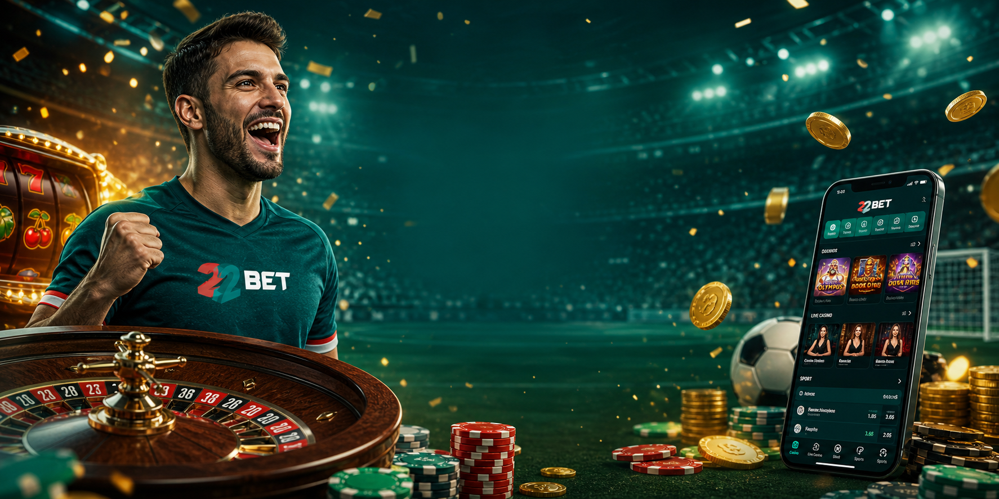

Todos los bonos de 22Bet: paquete de casino hasta 1.100 EUR, bono deportivo, recargas, giros gratis, cashback y torneos — con los rollover explicados sin trampa.
Hay una sola pregunta que decide si un bono vale algo, y casi nadie la hace antes de pulsar «aceptar»: ¿cuántas veces tengo que jugármelo y en cuánto tiempo? El número gigante del banner — esos «1.100 EUR» en letras de neón — es lo de menos. Lo que de verdad manda es el rollover y el plazo, y son justo las dos cifras que las promociones colocan en letra pequeña. Esta página le da la vuelta a eso: te pongo el rollover y el plazo por delante en cada caso, para que sepas distinguir el dinero de la decoración.
22Bet mantiene una de las páginas de promociones más cargadas que vas a ver, y buena parte de su contenido es de verdad aprovechable. Pero no todo pesa lo mismo, y un par de ofertas piden bastante más trabajo del que aparentan. Vamos a recorrerlo por orden — los dos bonos de bienvenida, las recargas semanales, los giros gratis, el cashback y los torneos — con la cifra que importa en cada uno y mi opinión sin rodeos sobre cuáles coger y cuáles dejar pasar.
Para que tengas el mapa entero antes de entrar al detalle, aquí están todas las promociones principales con lo único que de verdad las separa: el rollover.
Léela de arriba abajo y el patrón salta a la vista: lo deportivo y el cashback piden poco o nada, lo de casino pide mucho. Esa columna de la derecha debería guiar tus decisiones, no el tamaño del número de la izquierda. Con eso en la cabeza, al detalle.
| Promoción | Qué ofrece | Rollover |
|---|---|---|
| Bienvenida casino | Hasta 1.100 EUR + 150 giros gratis | x35 en slots, 7 días |
| Bienvenida deportes | 100% hasta 122 EUR | x5 en combinadas |
| Recarga viernes (deportes) | 100% hasta 100 EUR | x3 en 24 h |
| Cash Splash miércoles (casino) | 50% hasta 220 EUR | x40 en slots, 7 días |
| Mega Bonus domingo (casino) | 66% hasta 100 EUR + 50 giros | x40 en slots |
| Juego del Día (giros) | ~25 giros diarios | x35 (salvo aviso) |
| Cashback semanal | % del total apostado / pérdidas | Sin rollover |
Lo primero es una bifurcación de la que no se vuelve: 22Bet tiene dos bonos de bienvenida separados — uno de casino y otro de deportes — y al darte de alta te quedas con uno, no con los dos. Conviene pensarlo, porque el que descartas desaparece. La regla sencilla para elegir: mira dónde vas a pasar de verdad el tiempo, en los rodillos o en el boleto, y quédate con el de ese lado.
El de casino se reparte en tus cuatro primeros depósitos y suma hasta 1.100 EUR más 150 giros gratis. Se escalona así:
| Depósito | Bono | Giros | Depósito mínimo |
|---|---|---|---|
| 1.º | 100% hasta 300 EUR | 30 | 10 EUR |
| 2.º | 50% hasta 350 EUR | 35 | 15 EUR |
| 3.º | 50% hasta 350 EUR | 40 | 15 EUR |
| 4.º | 25% hasta 450 EUR | 45 | 15 EUR |
Y aquí está la condición que tienes que conocer antes de decir que sí: el rollover es de x35 sobre el importe del bono, en slots, dentro de siete días. No es un objetivo menor. Con 120 EUR de bono, un rollover x35 significa jugar más de 10.000 EUR en apuestas de slots antes de poder retirarlo — y en una sola semana. Para quien juega mucho, factible; para el ocasional, cuesta. Las slots cuentan al 100%, la mayoría de mesa y en vivo aportan poco o nada, y el envite máximo durante el rollover ronda los 5 EUR por giro.
Mi consejo honesto: coge el paquete de casino solo si ya tienes pensado jugar slots en serio durante la semana siguiente al depósito. Si vas a dar cuatro vueltas sueltas, el plazo se te echa encima antes de cumplir el rollover y el bono caduca. Un bono sin usar no te resta — pero tampoco te suma.
El de deportes es más simple y, para la persona adecuada, el mejor de los dos. Sobre tu primer depósito te dan un 100% hasta 122 EUR, desde un mínimo de unos 2 EUR. El rollover es de solo x5 — una fracción del listón del casino — y se libera apostando combinadas, no girando slots.
Las condiciones, en claro: cada combinada que cuente para el rollover necesita al menos tres selecciones, y cada selección tiene que ir a una cuota de 1,40 o más. Es una exigencia razonable, no una trampa — si ya juegas combinadas, la cumples sin pensarlo. Para el apostante que arma acumuladores con regularidad, este bono está cerca de liberarse solo, y es mucho más fácil de cerrar que el paquete de casino. Si tu terreno es el deporte, la elección aquí no tiene misterio.
Obtener bonoLa mecánica es sencilla, pero el orden importa: un paso a destiempo y te quedas sin oferta. El recorrido es este:
Si la oferta no se activa, casi siempre es por uno de tres motivos: depósito por debajo del mínimo, método que no califica (típicamente cripto en un bono de casino) o haber marcado el otro bono al darte de alta. Repasa esos tres antes de escribir al soporte.
Pasada la bienvenida, las recargas son lo que te hace volver. Tienen una ventaja: son previsibles — sabes qué día llegan — y están, en su mayoría, bien construidas. Dos corren cada semana con horario fijo.

Si en el fondo eres de los que disfrutan dándole a los rodillos, los giros gratis son la vía relajada. 22Bet los reparte a ritmo constante — dentro del paquete de bienvenida, por retos diarios y por promociones puntuales. Sueltos no son gran cosa, pero sumados, si te mantienes, cunden.
El «Juego del Día» es el goteo más fiable: si juegas el slot recomendado, te llevas giros — normalmente, unos 75 EUR de apuesta en ese slot te dan alrededor de 25 giros. Quien encadena el reto toda la semana pasa con holgura de los 100 giros, sin coste extra. El punto a vigilar: la mayoría de las ganancias de los giros arrastran el mismo rollover x35 del bono de casino, salvo que la promoción concreta diga otra cosa. Úsalos en slots de RTP alto para exprimirlos, y revisa la caducidad de cada promoción — hay giros que expiran el mismo día.
Es el incentivo que más valoro de toda la oferta, porque es limpio y llega sin requisito de apuesta. En la web aparece como «bono de reembolso», y funciona distinto para deportes y para casino.
Porcentaje de todo lo apostado y liquidado, abonado cada martes.
Ligado al nivel de fidelidad y a las pérdidas netas semanales.
Casi siempre sin requisito de apuesta añadido.
En sport empieza a sumar por encima de 1,50.
En deportes, 22Bet te devuelve cada semana un porcentaje de todo lo apostado y liquidado — ganes o pierdas — abonado cada martes. Un ejemplo: 1.000 EUR apostados a lo largo de la semana te devuelven una cantidad de forma automática. Suena pequeño, y en una apuesta suelta lo es, pero se aplica sobre todo tu volumen, no sobre tus pérdidas, y no arrastra rollover. Para quien apuesta con regularidad, eso es una rebaja real y silenciosa de la ventaja de la casa.
En casino, el cashback va ligado a tu nivel de fidelidad: en torno al 5% de las pérdidas netas semanales en el escalón de entrada, subiendo hasta cerca del 11% en la cúspide, más un pequeño rakeback por apuesta en el nivel más alto. También se abona casi siempre sin requisito de apuesta. La única condición a respetar en el cashback deportivo: las apuestas a cuota 1,00 no cuentan, y el valor solo empieza a sumar cuando colocas envites que califican, por encima de 1,50.
Obtener bonoPor encima de los bonos, 22Bet mantiene en marcha toda una tanda de promociones recurrentes. La mayoría no piden inscripción aparte — juegas lo que califica y acumulas puntos solo. Un repaso de lo que suele estar activo:
| Promoción | Área | En breve |
|---|---|---|
| Mega Bonus del domingo | Casino | 66% hasta 100 EUR + 50 giros en depósitos del domingo, rollover x40 |
| Accumulator Saver | Deportes | En combinadas de 7+ selecciones (cada una a 1,7+), 22Bet te devuelve el envite como apuesta gratis hasta 100 EUR si una falla |
| Combinada del Día | Deportes | Combinadas prearmadas a diario sobre los partidos grandes |
| Bet Booster | Deportes | Aumento de cuota en combinadas a partir de cuatro selecciones |
| Tienda 22Bet | Ambas | Canjea puntos del juego real por giros y apuestas gratis |
| Drops & Wins / torneos de slots | Casino | Torneos de proveedor con grandes botes vía clasificaciones y premios aleatorios |
| Bono de cumpleaños | Ambas | Puntos de fidelidad el día de tu cumpleaños, canjeables en la tienda |
El Accumulator Saver es el favorito discreto para el jugador de combinadas — un seguro que rescata el boleto al que se le cae una sola pata. Los torneos de proveedor tipo Drops & Wins de Pragmatic reparten botes enormes, pero sé realista: los primeros puestos van para jugadores de muchísimo volumen. Para el jugador normal, el gancho está más bien en los premios aleatorios que pueden caer de paso.
Para el paquete de bienvenida estándar no suele hacer falta código: eliges el bono al registrarte o en la página de depósito. Cuando una oferta concreta sí pide un código, aparece en su propia ficha de promoción. Los códigos rotan, así que usa el que muestra la oferta en sí y no uno que hayas visto suelto por ahí.
Y asegúrate de que tu depósito cae en el monedero correcto — 22Bet separa el saldo de casino y el de deportes, y un bono de casino solo prende sobre un depósito de casino. Desconfía de los «códigos exclusivos» de foros y vídeos: si no están en la fuente oficial, lo más probable es que no hagan nada.
Obtener bonoDistribución estimada
"El bono deportivo fue bastante claro: combinadas, cuota mínima y x5. Lo pude cerrar sin sentir que estaba forzando apuestas raras."
"El paquete de casino tiene valor, pero hay que entrar sabiendo que x35 en siete días no es para jugar cuatro giros sueltos."
"El cashback semanal es lo más cómodo: llega sin rollover y no tienes que perseguir otro requisito después."
"La recarga del viernes funciona bien si ya tienes jornada preparada. Si la coges tarde, esas 24 horas pesan bastante."
"Me gustan los giros del Juego del Día porque son constantes, pero siempre miro caducidad y rollover antes de activarlos."
"Accumulator Saver es el tipo de promo que sí uso. No promete milagros, pero salva alguna combinada larga cuando falla solo una pata."
"La clave es elegir casino o deportes al registrarte. Yo fui a deportes y no eché de menos el paquete de slots."
Respuestas rápidas sobre bienvenida, recargas, cashback, códigos y rollover.
22Bet pone sobre la mesa una de las páginas de promociones más completas del sector, y unas cuantas de sus ofertas son de verdad buenas — el bono deportivo con su suave rollover x5, el cashback semanal sin requisito de apuesta y el Accumulator Saver para el jugador de combinadas. Esas las usaría sin pensarlo dos veces.
La otra cara, dicha sin maquillar, son los rollover del lado casino. El x35 de la bienvenida y el x40 de la recarga del miércoles son duros, y un jugador ocasional rara vez los cumplirá dentro de la semana marcada. Eso no convierte los bonos en basura — pero sí en algo que hay que planificar, no coger al vuelo. Vuelvo a la pregunta del principio, que vale para toda la página: antes de mirar el número grande, mira el rollover y el plazo. Hazlo, quédate con lo que encaja con tu forma real de jugar y deja el resto sin remordimientos. Así sacas valor de verdad en vez de un bono que se queda caducando en la cuenta.